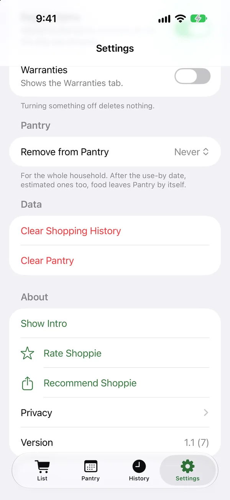
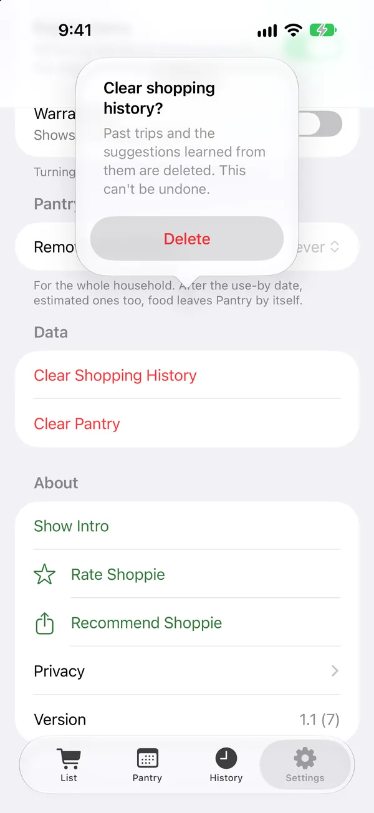

How to delete your Shoppie data from the app and iCloud
-
Step 1 Clear history or Pantry
On the Settings tab, under Data, tap Clear Shopping History or Clear Pantry.

-
Step 2 Confirm
Confirm with Delete. Clearing history also removes the suggestions learned from it; clearing Pantry also removes its reminders. This can’t be undone. Lists, regular items and warranties aren’t deleted here – delete those directly in the app.

-
Step 3 Delete data in iCloud
Remove everything else in iPhone Settings → [your name] → iCloud → Manage Storage → Shoppie. Deleting the app removes the data stored on your iPhone.
Frequently asked questions
Do you hold any data about me?
No. Shoppie collects no data and has no server. Everything stays on your iPhone and in your private iCloud.
More questions are answered on the Support page.